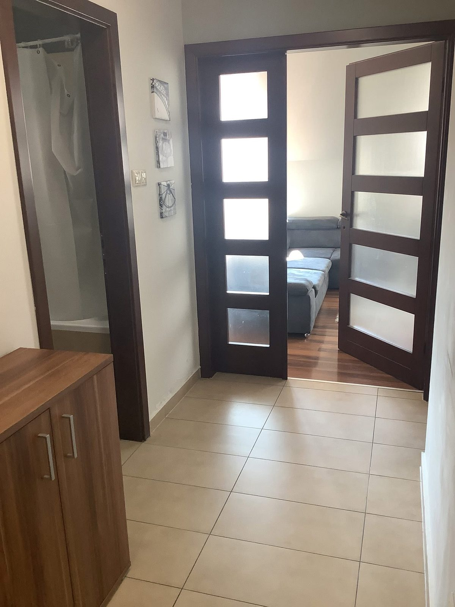

TisztaPont · takarítás
Tiszta terek.
Nyugodtabb mindennapok.
Takarítás otthonok, üzleti terek és intézmények számára, az adott helyszínhez és feladathoz igazítva.
Inkább beszélne? +36 20 596 6042 Rendelés a Wolton (külső oldal, új lapon nyílik)

Akiknél már dolgoztunk
- Pizza King
- EMIH
- ROKK
- Készenléti Rendőrség
- Walton Security
- Semmelweis Egyetem
- Rákossy Glass
- BAT – dohánygyár
- TEK
- Zsolnay Kulturális Negyed, Pécs
- Pécsi Állatkert
01 Szolgáltatások
Minden térhez a hozzá illő takarítás.
Egy lakás, egy iroda és egy szálláshely mást kíván. A teendőket mindig a helyszínhez és az Ön igényeihez igazítjuk.
Válasszon egy területet, és az időpontegyeztetőben már ki is jelöljük. A „Wolton is” jelölésű területekhez a Wolt felületén is talál csomagokat.
-
Lakások és családi házak
Rendszeres vagy alkalmi takarítás otthonokban. A helyiségeket és a teendőket előre egyeztetjük, hogy a munka az Ön napirendjéhez igazodjon.
-
Irodák, üzletek és üzleti terek
Munkaterek, eladóterek és közösségi helyiségek takarítása egyeztetett időpontban, úgy, hogy a lehető legkevésbé zavarja a működést.
-
Szálláshelyek és apartmanok
Takarítás vendégváltások között vagy előre megbeszélt rendben, apartmanokban és szálláshelyeken.
-
Építkezés és felújítás utáni takarítás
A munkálatok után maradt por és szennyeződés eltávolítása, hogy a helyiségeket újra birtokba vehesse.
-
Rendezvényekhez kapcsolódó takarítás
Előkészítés a rendezvény előtt, rendrakás és takarítás utána, a helyszín és a program ismeretében.
-
Ipari terek és nagyobb ingatlanok
Csarnokok, raktárak és nagyobb alapterületű ingatlanok takarítása, a feladat és a helyszín előzetes egyeztetése alapján.
-
Taxik utasterének takarítása
Taxik belső terének takarítása. A Wolt-felületen ez külön szolgáltatásként is szerepel; a részleteket ott, vagy telefonon egyeztetve találja.
02 Online rendelés
Válasszon takarítást online is.
Szolgáltatásaink egy része a Wolt felületén keresztül is elérhető. Tekintse meg az aktuális lehetőségeket és részleteket.
A Wolt külső felület, saját árakkal és rendelési feltételekkel. Az ott leadott rendelés nem kapcsolódik az oldal időpontkérőjéhez.
A Wolton jelenleg
- Lakás és családi ház
- Hotel és apartman
- Airbnb SOS
- Üzletek és irodák
- Építkezés után
- Rendezvények
- Taxitakarítás
Ellenőrizve: 2026. 11. 08. · aktuális kínálat és árak a Wolton
Három út a takarításig
-
Időpontigény itt az oldalon
Állítsa össze igényét öt lépésben, a részleteket ezután egyeztetjük.
Időpontot kérek -
Rendelés a Wolton
Válasszon a Wolton elérhető csomagok közül, a Wolt saját felületén, az ott látható árakon.
Megnézem a Wolton (külső oldal, új lapon nyílik) -
Telefonos egyeztetés
Ha egyedi a feladat, vagy kérdése van, beszéljük meg telefonon.
+36 20 596 6042
03 Munkáink
Helyszínek, ahol dolgoztunk.
Fotók a munkavégzés helyszíneiről. Bármelyik képre kattintva nagyobb méretben is megnézheti.
-
Étkezősarok üveglapos asztallal
-
Vendéglátóhelyi konyha rozsdamentes pultokkal
-
Fürdőszoba káddal és mosdóval
-
Előszoba burkolattal, rálátással a nappalira
-
Tágas nappali étkezőrésszel
-
Vendéglátó pavilon esti világításban
-
Nappali fotellel és tévéfallal
04 Így dolgozunk
Négy lépés az első hívástól az átadásig.
-
01
Kapcsolatfelvétel
Hívjon, írjon e-mailt, vagy állítsa össze időpontigényét itt az oldalon.
-
02
A feladat és a helyszín egyeztetése
Átbeszéljük, milyen térről van szó, mekkora a terület, és mire van szüksége.
-
03
Ajánlat és időpont véglegesítése
Az egyeztetés alapján ajánlatot adunk, és közösen rögzítjük az időpontot.
-
04
Takarítás és átadás
Elvégezzük a megbeszélt munkát, majd átadjuk a helyszínt.
05 Időpontegyeztetés
Kérjen időpontot néhány lépésben.
Az itt összeállított igény alapján egyeztetjük a részleteket. Az időpont az egyeztetés után válik véglegessé.
Ez az időpontkérő független a Wolttól. Ha a Wolton rendelne, azt a Wolt saját felületén teheti meg: megnézem a Wolton (külső oldal, új lapon nyílik)
Sürgős kérdése van? Keressen minket közvetlenül:
+36 20 596 6042 tisztapont.ugyfelszolgalat@gmail.com- Szolgáltatás
- Helyszín
- Időpont
- Elérhetőség
- Összesítés
1. lépés az 5-ből: Szolgáltatás
06 Kapcsolat
Beszéljük meg, mire van szüksége.
Hívjon, vagy írjon e-mailt: mondja el, milyen térről és milyen feladatról van szó, és egyeztetjük a részleteket.